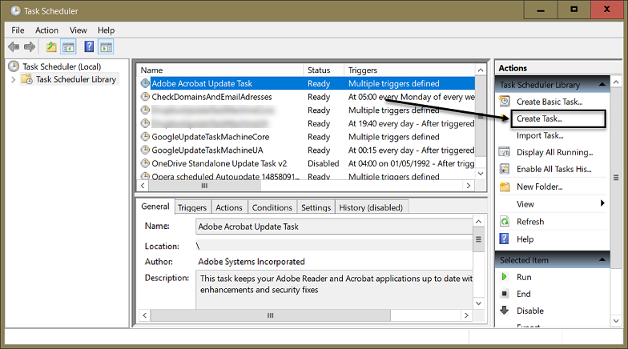
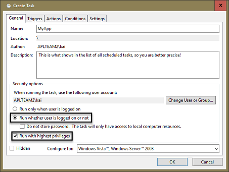
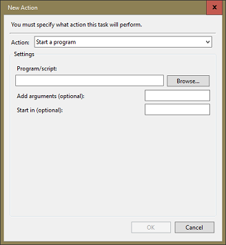
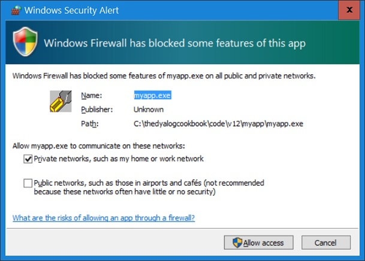

Windows offers a task scheduler in order to run applications at specific times. Like Services, Scheduled Tasks are designed for background jobs, meaning that such applications have no GUI, in fact, cannot have a GUI.
The Scheduler allows you to start the application on a specific date and time once, or every day, every week or every month. The user does not have to be logged on (that’s different in older versions of Windows) and it let you run an application in elevated mode (see below).
Scheduled Tasks – like Services – are perfect for background tasks. Examples are:
- Take a backup once a week
- Check the availability of your website once every hour
- Send a test email to all your email addresses once a week
Scheduled Tasks cannot interact with the user: when you try to put up a GUI and ask a question nothing appears on the screen: you just can’t do it.
If your application needs to run all the time, even with delays between actions, then running as a Service would be more appropriate. Services are typically started automatically when the machine is booted, and they typically keep running until the next boot.
To make this point clear, imagine these two scenarios:
- You need an application to start once a week and take a backup of a specific folder.
- You need an application to constantly monitor a specific folder for certain file types (say Markdown) and convert them (say into HTML files).
The former is clearly a candidate for a Scheduled Task while the latter is a candidate for a Service.
You need either a saved workspace with ⎕LX set or an EXE created from a workspace. An EXE has two advantages compared with an ordinary workspace:
- The user cannot investigate the code.
- Dyalog is not required on the target system, not even the Runtime EXE.
If neither of these concerns you, an EXE has no advantages over a simple saved workspace; it just adds complexity and should be avoided if there aren’t any advantages. However, if you cannot be sure the required version of Dyalog is installed on the target machine then it must be a stand-alone EXE.
We have already taken care of handling errors and writing to log files, which are the only sources of information in general, and in particular for analysing any problems that pop up when a Scheduled Task runs, or crashes. In other words, we are ready to go.
Our application is an obvious candidate for running as a Service, but we can still run it as a Scheduled Task, so let’s explore that way.
Dealing with Scheduled Tasks you usually don’t want more than one instance of the application running at the same time. One of the most common sources of difficulty investigating Scheduled Tasks turns out to be running a second instance.
For example, you try to ride into it but the port used by Ride is already occupied by an instance started earlier without you knowing of it. We are going to prevent this happening.
In the rare circumstances when you want application instances managed by the Task Scheduler to run in parallel, establish a mechanism that allows you to enforce having just one instance running, if only for debugging purposes. Make it an INI entry (like AllowMultipleInstances) and document it appropriately.
We resume, as usual, by saving a copy of Z:\code\v11 as Z:\code\v12.
In order to force the application to run only once at any given time we add a function CheckForOtherInstances to MyApp.dyalog:
∇ {tno}←CheckForOtherInstances dummy;filename;listOfTiedFiles;ind
⍝ Attempts to tie the file "MyAppCtrl.dcf" exclusively and returns the tie number.
⍝ If that is not possible then an error is thrown because we can assume that the
⍝ application is already running.\\
⍝ Notes:
⍝ * In case the file is already tied it is untied first.
⍝ * If the file does not exist it is created.
filename←'MyAppCtrl.dcf'
:If 0=F.IsFile filename
tno←filename ⎕FCREATE 0
:Else
:If ~0∊⍴⎕FNUMS
listOfTiedFiles←A.dtb↓⎕FNAMES
ind←listOfTiedFiles⍳⊂filename
:AndIf ind≤⍴⎕FNUMS
⎕FUNTIE ind⊃⎕FNUMS
:EndIf
:Trap 24
tno←filename ⎕FTIE 0
:Else
'Application is already running'⎕SIGNAL C.APP_STATUS.ALREADY_RUNNING
:EndTrap
:EndIf
∇Notes:
- First we check whether the file
MyAppCtrl.dcfexists. If not, we create it and the job is done: creating a file implies an exclusive tie. - If it does exist we check whether it is tied by itself, in case we are developing and have restarted the application without having closed it down properly. We then untie the file.
- Finally we attempt to tie the file exclusively but trap error 24 – that’s FILE TIED. In that case we signal an error
Constants.APP_STATUS.ALREADY_RUNNING. - The file is expected (or will be created) in the current directory.
Since this function will signal an error Constants.APP_STATUS.ALREADY_RUNNING we need to add this to the EXIT namespace in MyApp:
:Namespace EXIT
...
UNABLE_TO_WRITE_TARGET←114
ALREADY_RUNNING←115
GetName←{
....
:EndNamespaceWe change Initial so that it calls this new function:
∇ (Config MyLogger)←Initial dummy
...
Config←CreateConfig ⍬
Config.ControlFileTieNo←CheckForOtherInstances ⍬
CheckForRide Config.(Ride WaitForRide)
...
∇We want to untie the file as well. So far we have not paid any attention to how to close the application down properly; now we take this opportunity to introduce a function Cleanup which does that:
∇ {r}←Cleanup
r←⍬
⎕FUNTIE Config.ControlFileTieNo
Config.ControlFileTieNo←⍬
∇
:EndNamespaceOf course we have to call Cleanup from somewhere:
∇ {r}←StartFromCmdLine arg;MyLogger;Config;rc;⎕TRAP
...
rc←TxtToCsv arg~''''
Cleanup
Off rc
∇After all these changes it’s time to execute our test cases. Execute #.Tests.Run.
Turns out that two of them fail! The reason: when we run Test_exe_01 and Test_exe_02 the control file is already tied. That’s because Test_TxtToCsv runs first, and it calls Initial – which ties the control file – but not Cleanup, which would untie it. The fix is simple: we need to call Cleanup in the test. However, we can’t just do this at the end of Test_TxtToCsv_01:
∇ R←Test_TxtToCsv_01(stopFlag batchFlag);⎕TRAP;rc
...
→FailsIf rc≢##.MyApp.EXIT.SOURCE_NOT_FOUND
#.MyApp.Cleanup ⍬
R←∆OK
∇If we do this then Cleanup would not be called if the check fails. Let’s do it properly instead:
∇ R←Test_TxtToCsv_01(stopFlag batchFlag);⎕TRAP;rc
...
→GoToTidyUp rc≢##.MyApp.EXIT.SOURCE_NOT_FOUND
R←∆OK
∆TidyUp:
##.MyApp.Cleanup ⍬
Note that we must call MyApp.Cleanup rather than just Cleanup because we are at that moment in Tests – and we don’t want to execute Tests.Cleanup!
We can learn some lessons from the failure of those two test cases:
- The sequence in which the tests are executed can have an impact on whether tests fail or not. If
Test_TxtToCsvhad been the last test case, the problem would have slipped through undetected. - That a test suite runs through OK does not necessarily mean it will keep doing so when you execute it again. If
Test_TxtToCsvhad been the very last test case the test suite would have passed without a problem but an attempt to run it again would fail because now the control file would have been tied, andTest_exe_01would have failed.
In our specific case it was actually a problem in the test cases, not in MyApp, but the conclusion stands anyway.
Shuffle test cases
At the time of writing (2017-07) the sequence of the test cases relies on alphabetical order and is therefore predictable. On the to-do list for the Tester class is a topic: Add option that makes the test framework shuffle the test cases so that the order of execution is not predictable anymore.
Press the Win key and type Scheduler. Select Task Scheduler from the list. You will see:

First check whether the fifth point in the Actions pane on the right reads Disable All Tasks History. If it does not you won’t get any details about a Scheduled Task.
The arrow points to the Create Task command – click it.

- Name
- Used in the list presented by the Task Scheduler.
- Description
- Shown in the list presented by the Task Scheduler. Keep it concise.
- Run only when user is logged on
- You will almost certainly change this to Run whether user is logged on or not.
- Do not store password
- The password is stored safely, so there is no reason not to provide it.
- Running with highest privileges
Unfortunately this check box is offered whether your user account has admin rights or not. If it does not, then ticking the box won’t have any effect.
If your user account has no admin rights but your Scheduled Task needs to run with highest privileges then you need to specify a different user id / password after clicking the Change user or group button.
Whether your application needs to run with highest privileges or not is impossible to say. Experience shows that sometimes a process that fails when – and only when – the application runs as a Scheduled Task will work fine if run as a Schedule Task with highest privileges, although it is by no means clear what those rights are required for.
- Configure for
- Generally you should select the OS the task is running on.
UAC, admin rights and all the rest
With UAC (User Account Control), users of the admin group have 2 tokens. The filtered token represents standard user rights.
This token is used by default, for example when you create a shell (a console). Therefore you have just standard user rights by default even when using a user account with admin rights. However, when you have admin rights and you click an EXE and select Run as administrator, the full token is used, which contains admin rights.
Notes:
- Some applications ask for admin rights even when you do not right-click on the EXE and select Run as administrator; the Registry Editor and the Task Manager are examples.
- Even if you run an application with admin rights (sometimes called in elevated mode) it does not mean that the application can do whatever it likes, but as an admin you can always grab any missing rights.
- Remote filesystems are unlikely to be visible; you need to mount them again.
The tab holds no mysteries.
After clicking New this is what you get:

Make sure you use the Browse button to navigate to the EXE/BAT/whatever you want to run as a Scheduled Task. This avoids typos.
- Add arguments
- allows you specify something like
MAXWS=345Mor the name of a workspace in case Program is not an EXE but a Dyalog interpreter. In particular, you should addDYALOG_NOPOPUPS=1. This prevents any dialogs from popping up (aplcore, WS FULL, etc.). You don’t want them when Dyalog is running in the background because there's nobody around to click the OK button… - Start in
is useful for specifying what will become the current (or working) directory for the running program. We recommend setting the current directory in your code as early as possible, so you don’t really need to set this here except that when you don’t you might well get an error code 2147942512.
We will discuss later how such error codes can be interpreted, but for the time being, trust us that it actually means Not enough space available on the disk! When you do specify the Start in parameter it runs just fine.
However, you must not delimit the path with double-quotes. It’s understandable that Microsoft does not require them in this context because by definition any blanks are part of the path, but why they do not just ignore them when specified is less understandable.
The tab holds no mysteries.
Unless you have a very good reason not to, Allow task to be run on demand, which means you have the Run command available on the context menu.
Note you may specify restart parameters in case the task fails. Whether that makes any sense depends on the application.
The combo box at the bottom allows you to select Stop the existing instance, which can be quite useful when debugging the application.
To start the task, right-click on it in the Task Scheduler and select Run from the context menu. Then check the log file. We have tested the application well, we know it works, so you should see a log file that contains something like this:
2017-03-31 10:03:35 *** Log File opened
2017-03-31 10:03:35 (0) Started MyApp in ...\code\v12\MyApp
2017-03-31 10:03:35 (0) ...\code\v12\MyApp\MyApp.exe MAXWS=370M
2017-03-31 10:03:35 (0) Accents ÁÂÃÀÄÅÇÐÈÊËÉÌÍÎÏÑÒÓÔÕÖØÙÚÛÜÝ AAAAAA...
2017-03-31 10:03:35 (0) ControlFileTieNo 1
2017-03-31 10:03:35 (0) Debug 0
2017-03-31 10:03:35 (0) DumpFolder C:\Users\kai\AppData\Local\MyApp\Errors
2017-03-31 10:03:35 (0) ForceError 0
2017-03-31 10:03:35 (0) LogFolder C:\Users\kai\AppData\Local\MyApp\Log
2017-03-31 10:03:35 (0) Ride 0
2017-03-31 10:03:35 (0) Trap 1
2017-03-31 10:03:35 (0) Source: MAXWS=370M
2017-03-31 10:03:35 (0) *** ERROR RC=112; MyApp is unexpectedly shutting down: SOURCE_NOT_FOUNDSince we have not provided a filename, MyApp assumed that MAXWS=370M would be the filename. Since that does not exist the application quits with a return code SOURCE_NOT_FOUND, which is exactly proper.
However, from experience we know the likelihood of the task not running as intended is high. We have already discussed some of the issues that might pop up, and we will now discuss some more we have enjoyed over the years.
Suppose you want to Ride into a Scheduled Task. So in the INI you set the [Ride]Active flag to 1. While the Windows Firewall has still no rules for both this port and this application you won’t see the usual message when you run the application for the very first time, assuming that you use a user ID with admin rights:

The application would start, seemingly run for a short period of time and then stop again without leaving any traces: no error codes, no log files, no crash files, nothing.
It is different when you simply double-click the MyApp.exe: in that case the Security Alert dialog box pops up, giving you an easy way to create a rule that allows the application to communicate via the given port.
By the way, when you click Cancel in the Security Alert dialog box, you might expect the Windows Firewall to deny access to the port but not create a rule either. You would be mistaken. The two buttons Allow access and Cancel shouldn’t be buttons at all! Instead there should be a group Create rule with two radio buttons: Allow access and Deny access.
If the user clicks the “Cancel” button a message should pop up saying that although no rule will be created, access to the port in question is denied. That would imply that when the application is started again the Security Alert dialog box will reappear. Instead, when Cancel is clicked a blocking rule for that combination of application and port number is created, and you will not see that dialog box again for this combination.
Once you have executed the Run command from the context menu the GUI changes the status from Ready to Running. That’s fine. Unfortunately it doesn’t change automatically back to Ready once the job has finished, at least not at the time of writing (2017-03) under Windows 10. For that you have to refresh with F5.
When you’ve found a bug and run MyApp’s Make.bat again, remember that this will overwrite the INI. So if you’ve changed, say, Ride’s Active flag in the INI from 0 to 1, it will be 0 again after the call to Make.bat, and any attempt to Ride into the EXE will fail. Easy to overlook!
If you see this you most probably forgot to copy over the DLLs needed by Ride [1] itself. That’s what triggers the return code 32 which means File not found.
Windows return codes
To translate a Windows return code like 32 into a more meaningful piece of information, download and install the user command GetMsg from the APL wiki. Then you can do this:
]GetMsgFrom 32
The process cannot access the file because it is being used by another process.Sadly, the error messages are not always that helpful. The above message appears if you try to switch on Ride in an application, and the interpreter cannot find the DLLs that Ride needs.
If for some reason you’ve created MyApp.exe by binding the application to the development version of Dyalog rather than the runtime (you can do this by providing a 0 as left argument to the MakeExport function) then you might run into a problem. Our code notices whether it is running under a development EXE or a runtime EXE. Error trapping will be inactive (unless it is enforced via the INI) and ⎕OFF won’t be executed; instead it would execute → and hang around but without you being able to see the session.
So don’t do this. Because you have Ride, the development version has no advantages over the runtime EXE anyway.
… but only when running as a task. Start the Task Scheduler and go to the History tab; if this is empty then you have not clicked Enable all tasks history as suggested earlier.
Don’t get fooled by Action completed and Task completed – they don’t tell you whether a task failed or not. Click Action completed: at the bottom you get information regarding that run. You might read something like:
Task Scheduler successfully completed task "\MyApp" , instance "{c7cb733a-be97-4988-afca-a551a7907918}" , action "...\code\v12\MyApp\MyApp.exe" with return code 2147942512.That tells you task did not run at all. You won’t find either a log file or a crash file, and you cannot Ride into the application.
If the Task Scheduler itself throws an error you will find the error codes of little value – at first sight.
You can provoke such an error quite easily: edit the task we’ve created and change the contents of the Program/script field in the Edit action dialog to something that does not exist, so the Task Scheduler won’t find such a program to run. Then issue the Run command from the context menu.
Update the GUI by pressing F5 and you will see that errors are reported. The row that reads Task Start Failed in the Task Category columns and Launch Failure in the Operational Code columns is the one we are interested in. When you click at this row you will find that it reports an Error Value 2147942402. What exactly does this mean?
One way to find out is to google for 2147942402. For this particular error this will certainly do, but sometimes you will have to go through plenty of pages when people managed to produce the same error code in very different circumstances, and it can be quite time-consuming to find a page that carries useful information for your circumstances.
Instead we use the user command [3] Int2Hex, based on code written and contributed by Phil Last [2]. With this user command we can convert the value 2147942402 into a hex value:
]Int2Hex 2147942402
80070002Third-party user commands
There are many useful third-party user commands available. For details how to install them see “Appendix 2 — User commands”.
The first four digits, 8007, mean that what follows is a Win32 status code. The last 4 are the status code. This is a number that needs to be converted into decimal:
]Hex2Int 0002but in our case that is of course not necessary because the number is so small that there is no difference between hex and integer anyway, so we can convert it into an error message straight away.
Again we use a user command that is not part of a standard Dyalog installation but because it is so useful we strongly recommend install it [4]. It translates a Windows error code into meaningful text.
]GetMsgFrom
The system cannot find the file specified.And that’s why it failed.
It is possible to create Scheduled Tasks by a program, although this is beyond the scope of this book. See
https://msdn.microsoft.com/en-us/library/windows/desktop/bb736357(v=vs.85).aspx
for details.
Footnotes
This topic was discussed in the chapter “Debugging a stand-alone EXE”
For details and download regarding the user commands
Hex2IntandInt2Hexsee http://aplwiki.com/UserCommands/HexFor details and download regarding the user command
GetMsgFromsee http://aplwiki.com/UserCommands/GetMsgFrom